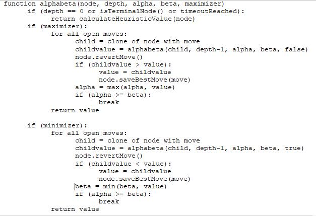
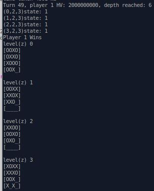

CS 640 Programming Assignment 3
Dharmit Dalvi and James Dunn
April 25, 2019
For this assignment we created an AI to play a 3D version of the basic tic-tac-toe game using a three-dimensional 4x4x4 playing board. The algorithms we are allowed to use are minimax and alpha-beta, with a custom heuristic value algorithm. No more than 5 seconds are allowed to be spent calculating any individual move. The assignment is written in java.
3-D tictactoe is a challenging enough game that it takes more than a rudimentary AI to break the game. There are 64 different spaces on the board, and accordingly 64 factorial different outcomes that a complete AI algorithm would have to search through. Use of the alpha-beta pruning trick greatly reduces the search space.
Using the provided template,we have written a java AI program that uses a handful of strategies to determine the best possible move that it can make using the allotted 5 seconds. We have implemented the following algorithmic features, some of which are present in the final AI, and others which are not because they did not perform as well as the final AI. Note that we have coded the AI such that player 1 is always the maximizer and player 2 is always the minimizer:
Minimax with alpha-beta pruning (used in final AI): the baseline for the assignment that we are all required to use. We took the recommended pseudocode from [2] and translated it into java, paying close attention to what parameters should be passed by reference in the recursion tree and which need to be deep copied to prevent overwriting the gameboard state.
The psuedocode for minimax with alpha-beta pruning is as follows (essentially the same as in [2]). This is recursive, initially called with alpha = -inf, beta = inf, depth = 4 (or another value), and node as the state of the game board.
Infinite HV for win/loss (used in final AI): For every child node that gets created, we check the state of board to see if the move results in either player winning (or a draw) and set the heuristic value to the integer equivalent of +/- infinity accordingly. Run inside of the minimax algorithm, this implicitly ensures that if there is a way to prevent the other player from winning, the corresponding move is made, and it also ensures that if there is a way to win the game in the next move, then the AI will take it. This is the most basic of the algorithms, but it is also the most powerful and important in determining the success of the AI.
Counting ways left to win (not used in final AI): As suggested in lab, we implemented an algorithm to count up the total number of ways remaining that each player can win the game and use the difference in calculating the heuristic value. i.e. if out of the 76 different ways that the game can be won, there are 70 still available to player 1, but only 66 available to player 2, then the heuristic value will be set to 70-66=+4, indicating a better situation for player 1. This was not used in the final AI since it was beaten easily by another algorithm.
HV boost for center squares (not used in final AI): We experimented with giving a small HV boost to the center squares and the corner squares to break ties between otherwise equivalent moves. From experience, these squares tend to be more valuable than the others. However, this action proved computationally expensive, likely because it prevents alpha-beta pruning from working as well, so we abandoned that idea in favor of deeper searches.
Score chains of 2 and 3 marks highly (used in final AI): The best heuristic value calculation method we found and what we have implemented in our final AI is the following algorithm that we have adapted from [3]. This gives the AI a strong push towards completing lines of 4, which have their HV set to +/-infinity by the “terminal check” function:
Quickest win/slowest loss (used in final AI): this is a small adjustment to the “infinite” heuristic value that is assigned to a win or loss. If the result of a move is the maximizer winning, then the remaining depth left to search is added to the “infinite” value (“infinity” = 2000000000 in the code), and if the result of a move is the minimizer winning, then the remaining depth left to search is subtracted from the “infinite” value. The effect of this is that the player who believes they are about to win will do so in the least number of moves possible, while the player who believes they are about to lose will try to postpone their ultimate demise as long as possible.
Progressive deepening (used in final AI): is implemented and used sparingly in testing since it takes a very long time to run. The final AI includes it, but we did not run any 100-run experiments with it for lack of time. It has been tested and does work correctly, beating all AI that do not have progressive deepening.
Integer arithmetic (used in final AI): The entire code uses only integers. This is done to prevent the associated slowdown of using floating point arithmetic, allowing a deeper search when progressive deepening is turned on.
Function Definitions are provided in the code as comments and listed below. The primary function is alphabeta, which is the recursive function in the minimax with alphabeta pruning algorithm. We implement a Node helper class to maintain the state of the board. We avoid expensive deep copies by manually removing the most recent move from the board immediately upon the return of the alpha-beta function to its parent.
FUNCTION DEFINITIONS:
Node Class: holds the state of a node (i.e. the game board itself) and associated functionality. It is a private helper function of aiTicTacToe.
Node:Node(): constructor for Node class. It implements an inexpensive shallow copy to avoid the more expensive and unnecessary deep copy. The state of the board is kept correct manually in the alphabeta() function.
Node:getBoard(): getter for the current state of the board.
Node:addMark(): changes the board at the input position to 1 (X) if it is the maximizer's turn or 2 (O) if it is the minimizer's turn.
Node:removeMark(): removes the mark at the position, resetting it to zero. This is used in lieu of expensive deep copies when creating children of each node.
Node:setBestChildPos(): the Node class carries as a member variable the position on the 4x4x4 board that is associated with the best heuristic value found thus far. This functions sets it when a better move is found. This is not necessary for the assignment, but should the AI need to be aborted early, it would simply use the move associated with this position when it prematurely exits.
Node:getBestChildPos(): returns the best child position (best move found yet). Used at the end of the AI to send the move to the “referee” runAITicTacToe class.
Node:isOccupied(): returns false if the input position is unoccupied (state -1 or 0), or true if the input position is occupied (state 1 or 2)
Node:spawn(): spawns (or clones in java lingo) a child of the board and adds the appropriate mark for the next move that the child node represents.
aiTicTacToe class: main class for the AI and the primary interface to the “referee” runAITicTacToe class.
AiTicTacToe:getStateOfPositionFromBoard(): returns the state of the input position from the input board.
AiTicTacToe:myAIAlgorithm(): main function for the AI. It calls the root level alphabeta at the top of the recursion tree and returns the resulting best move to the caller. Also determines how many moves have been made to designate the appropriate depth per the adaptive depth algorithm described earlier (more moves made = deeper search).
AiTicTacToe:alphabeta(): the heart of the AI and the main function in the recursion tree. It follows the minimax algorithm with alphabeta as in [2]. Note the addition of the node.removeMark() call to reset the board state after each child returns so that expensive deep copies can be avoided.
AiTicTacToe:getHeuristicValue(): calculates the heuristic value of the input board. The HV calculation consists of two pieces: counting the number of remaining ways for each player to win, and checking if either player has won the game or if it is a tie (terminal condition) and setting the HV to positive or negative infinity appropriately. Algorithms for calculating the HV that were tested but ultimately not used remain in the function but prevented from operating with “if (false) { }” switches.
AiTicTacToe:terminalCheck(): loops through all of the possible ways to win the game and brute force checks if either player has achieved a win. Essentially a copy of the “isEnded” function provided for this assignment but without the associated print statements.
AiTicTacToe:initializeWinningLines(): creates a list of all the possible ways to win the game. Copy of the same function provided for this assignment.
AiTicTacToe constructor(): basic constructor. Calls initializeWinningLines() so that expense only has to be made once.
To test the performance of the various aspects of the AI system, we put if statements around each new algorithm that we added to improve the performance so that only one of the two AI players would get to use the algorithm. If the player that was using the new algorithm consistently won the game, then we deemed each algorithm to be an improvement and added it to the baseline. The resulting best AI uses a heuristic value as defined above in algorithm #2 and #5, with progressive depth. Note that because the full progressive depth AI takes exceedingly long to complete, we capped it at depth=4 for our 100-run experiment results shown below. The final AI caps at depth = 15, which was never reached in testing before the 5 second timer was up.
Our final AI was run against 3 other opponents:
The basic “random-moves” AI that was included in the project template.
A depth = 3 AI that is otherwise identical.
A depth = 4 AI with the “count total number of ways remaining to win” algorithm suggested in our lab section.
Note that because our AI does not include any randomness, the results of the 2nd and 3rd competitions are effectively deterministic – only the randomly selected player who goes first determines the outcome of the game. The only caveat is processor timeouts. The AI keeps track of elapsed time, and if it sees more than 4.9 s elapsed since it has been called upon, it will immediately break off and return the result from the previous depth search.
Results for 100 games of our final AI (with depth capped at 4) against these three opponents are shown below.
|
Competition |
Final AI Wins |
Competitor Wins |
Avg Time Per Move (ms) |
|
Final AI vs “random moves” |
100 |
0 |
446 |
|
Final AI vs depth 3 AI |
100 |
0 |
226 |
|
Final AI vs “count ways” AI |
100 |
0 |
286 |
The final AI clearly beats all of its weaker opponent AI's consistently. We ran a small number of tests of the final AI with maximum progressive depth = 15 against the final AI with maximum progressive depth = 4 AI, and the depth = 15 AI only won about half the time. This is probably because it never actually reached depth = 15 before running out of time: most of the time, it only got through a depth=5 or depth=6 search, occasionally getting to depth=7 or depth=8 towards the end of the game when there are less moves available to search. This max depth = 15 AI is the AI we submitted for the competition.
The final AI that we have settled on takes 35+ moves and occasionally ends in a tie when playing against itself. There is randomness related to how deep the AI can search at each turn, so the results are not deterministic. Having such long games and even ties is a good indicator that the AI is doing the best that it can at preventing its opponent from winning.

Figure 1: Sample results of our final AI versus itself. One of these takes 3 to 5 minutes to complete, so in the interest of time, we did not run very many of them. Notice the 2nd game ended in a tie, a very unlikely result unless both AI are doing very well.
There are a few primary takeaways from these experiments:
The AI is easily able to beat random behavior 100% of the time. This is expected and a good indicator that the AI is not buggy.
Search tree depth is by far the best use of computational resources – a deeper search will provide better performance than a better HV algorithm that uses a shallower search. The progressive depth method takes full advantage of this fact.
Integer arithmetic is faster than floating point – using only integer arithmetic sped up the program.
Since we are given 5 seconds to make a move, we have to deal with the tradeoff between runtime and quality of AI. We found through experimentation that a simple HV based on the number of marks in a row for each player, plus a check for when either player wins, proved to work quite well.
Since the search tree depth is the strongest way to improve the AI, it made more sense to keep a simple heuristic value algorithm and search as deeply as possible.
The AI is performing relatively well, easily beating all of the opponent AI we competed it against consistently. Throughout testing various configurations of the more complex AI, games tended to last at least 30 moves, and some even resulted in ties, indicating that the AI is good at preventing its opponent from winning.
Computational efficiency is the most important aspect of the algorithm, primarily because it allows a deeper search. We believe we have made our algorithm very computationally efficient, and consequently can search deeper and perform better than competing AI, without going over the 5 second time limit per turn.
1. To win a game of 3x3 tictactoe, the first player should always pick the center square because that prevents the opponent from having many ways to win.
The first player to go in a 3x3 game will not always win, but with perfect play can at least guarantee a tie. The second player in a 3x3 game similarly can always guarantee a tie.
There are 8 ways to win a 3x3 tictactoe game: 3 vertical ways, 3 horizontal ways, and 2 X's. There are 76 ways to win a 4x4x4 tictactoe game: 16x3=48 straight lines, 4 ways coming from the corners, and 24 ways with a diagonal.
A “node” in our tictactoe game is a move made with the board in a particular state.
A “terminal condition” in our tictactoe game is someone winning the game (or a tie when all the squares fill up)
To make the AI always win when in the next move when it has the opportunity, and similarly to make it always prevent the opponent from winning in the next move when it has the opportunity, we must search through all the possible ways to win when calculating our heuristic value. If a child node results in a win for either player, the heuristic value is set to plus or minus infinity, depending on whether the maximizer or minimizer wins. The minimax algorithm's first depth layer will see the infinite HV corresponding to the terminal condition and either avoid the move that gets it at all costs or make the move that gets it immediately.
We consulted the following when making our algorithm, in addition to the template code provided for the assignment:
“Minimax”, https://en.wikipedia.org/wiki/Minimax#Minimax_algorithm_with_alternate_moves , accessed 4/20/19
“Alpha-Beta Pruning”, https://en.wikipedia.org/wiki/Alpha%E2%80%93beta_pruning , accessed 4/20/2019
“3D Tic Tac Toe”, https://github.com/DevanshuSave/3DTicTacToe, accessed 4/23/19